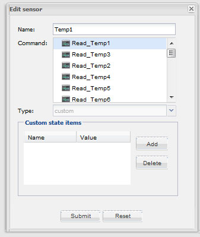
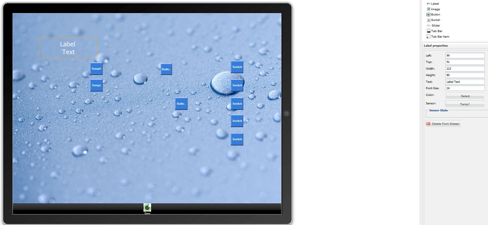
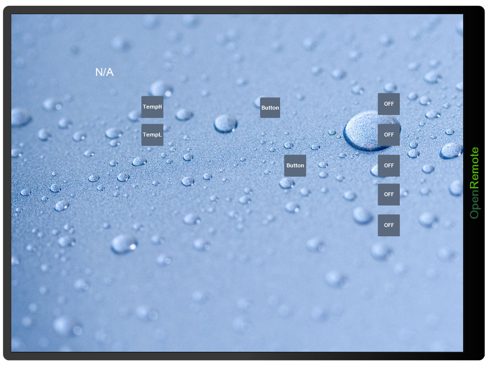
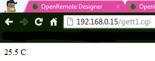

I'm new to this issue and was first exposed to OpenRemote.
Please help me deal with the display of sensor values.
I have a controller CAI WebControl PLC. He works on the HTTP protocol. Channel management works, and receive information from the sensors is not working. Always displays N/A. I tried different options, but in all cases, N/A. In what could be the problem?
I know English is bad, so sorry, can not properly write something. Translated from Russian Google.
Tell me what to do?
Openremote.zip file available here
Thank you.
{kind=link}
{kind=link}
{kind=link}
{kind=link}
{kind=link}
|
The HTTP protocol normally returns string values. You need to use custom sensor to receive values. |
|
Thanks for the tips, but I have nothing.     What's wrong? |
|
Hi guys, In fact, I have the same problem that the http get is not working. I set up the http temperature get example long time ago, it used to work fine until I changed to the latest 2.0.1 controller version. Now, http does not work any more. Thanks, Alex |
|
Вижу никто ничем помочь не может. Ну и на том спасибо... |
|
If your get request directly returns the temp, you don't need the XPath expression. That was an example to parese the google weather xml. |
|
Do you mean the Google Weather example? |
|
I had a similar problem today where I could not retrieve an attribute value with the HTTP GET. Maybe my knowledge of XPATH has become a bit rusty. I was just playing with these commands to understand how they work. |
|
Thanks Marcus, you are completely right. I did not even notice that google shut down its weather api service. I finally found a working alternative: Under http://www.worldweatheronline.com/weather-api.aspx people offer a free weather interface that supports xml,csv and JSON responses. You only have to register first by email (it is for free). Once the registration has been completed, you get a key that has to be inserted in the url http request as shown below. Cheers, |
|
I just tested with the older release 2.0.0 on a one line XML file: |
|
Here is the page that describes how to deal with XPath |